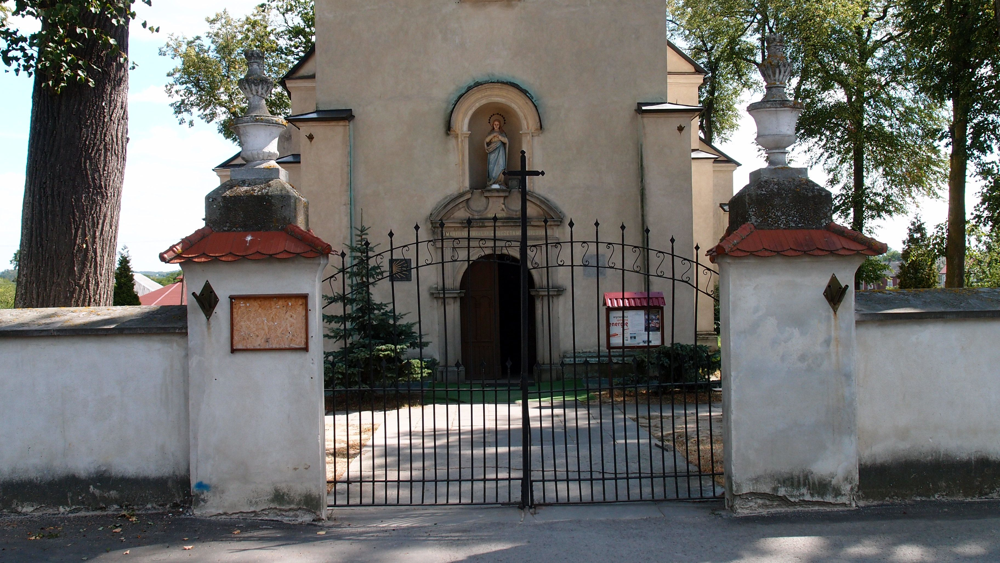
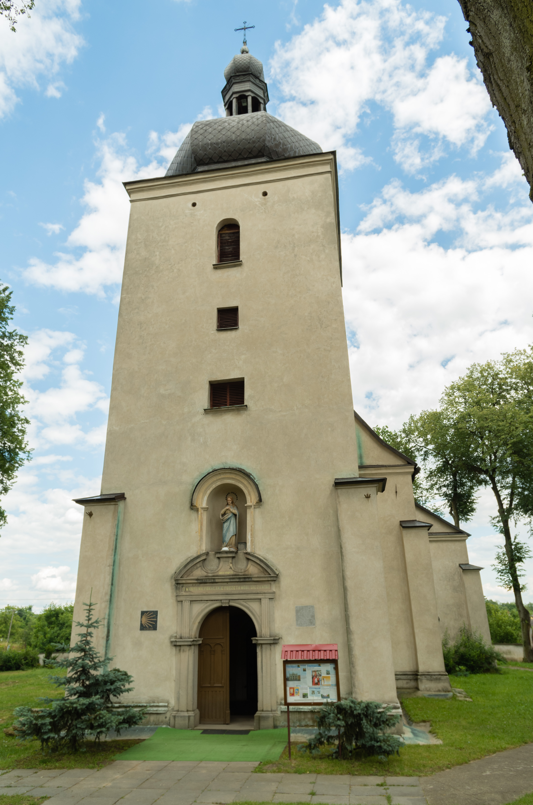

Najbliższa niedziela
Msze święte
Kotuszów9:00 · 12:00
Kaplica w Chańczy10:30
Pełny porządek

Diecezja Sandomierska · Dekanat Staszów
Barokowa świątynia w sercu Kotuszowa, miejsce modlitwy i przystanek na Małopolskiej Drodze św. Jakuba.
Wspólnota na szlaku
Najstarsza zachowana wzmianka o parafii pochodzi z 1326 roku. Dzisiejszy kościół wzniesiono w XVII wieku, a jego wieża i muszla św. Jakuba do dziś wskazują drogę mieszkańcom, pielgrzymom i gościom.
Najbliższa niedziela
Małopolska Droga św. Jakuba
Świątynia leży na pielgrzymim szlaku z Sandomierza przez Kraków do Santiago de Compostela.
Poznaj jakubową opowieśćKontakt i dojazd
28-225 Szydłów
woj. świętokrzyskie
Kalendarz wspólnoty
Stały rytm modlitwy i najważniejsze uroczystości parafialne.
Porządek nabożeństw
Godziny według informacji Diecezji Sandomierskiej. W święta i okresach szczególnych warto potwierdzić porządek pod numerem 41 354 07 66.
Święta patronalne
Najważniejsze doroczne święto patrona parafii i spotkanie wspólnoty na jakubowym szlaku.
Odpust związany z kaplicą i wielowiekową tradycją Bractwa św. Józefa.

Dla pielgrzymów
25 lipca 2009 roku w Kotuszowie otwarto odcinek Drogi św. Jakuba prowadzący z Sandomierza przez Kotuszów i Kraków w stronę Santiago de Compostela. Muszla na elewacji kościoła przypomina, że parafia jest częścią europejskiej sieci pielgrzymich dróg.
Zobacz szlakZ życia parafii i miejscowości
Najświeższe potwierdzone informacje z Kotuszowa i lokalnej wspólnoty.
Męska drużyna OSP Kotuszów zajęła trzecie miejsce podczas XIII Powiatowych Zawodów Sportowo-Pożarniczych w Staszowie. Gminę reprezentowała również młodzieżowa drużyna dziewcząt z Kotuszowa.
Czytaj w serwisie gminyPodpisano umowę na przebudowę odcinka drogi powiatowej Brzeziny–Szydłów–Kotuszów i budowę chodnika w miejscowości.
Więcej informacjiParafia i Bractwo Świętego Jakuba Starszego Apostoła zaprosiły mieszkańców oraz gości na doroczny odpust patronalny.
Zobacz ogłoszenieJubileusz przypomniał dekadę działań społecznych, religijnych i kulturalnych Bractwa działającego przy parafii w Kotuszowie.
Poznaj jubileuszInformacje zaktualizowano 3 października 2026 r. Na stronie zamieszczono wyłącznie wiadomości potwierdzone w publicznych źródłach.
Dziedzictwo Kotuszowa
Siedem stuleci wiary, odbudowy i obecności na pielgrzymim szlaku.
Świątynia w planie krzyża
Obecna murowana świątynia została ufundowana w 1661 roku przez Krzysztofa z Brzezia Lanckorońskiego. Czterokondygnacyjna wieża, kaplice św. Antoniego i św. Józefa oraz węższe prezbiterium tworzą charakterystyczną barokową sylwetę.
Podczas działań wojennych w 1944 roku kościół spłonął, a jego mury zostały poważnie naruszone. Odbudowę rozpoczął po wojnie ks. Antoni Sobczyk wraz z parafianami — przywrócono dach, wieżę, ołtarze i wyposażenie.
„Miejsce modlitwy, pamięci i drogi — budowane przez kolejne pokolenia.”
Najważniejsze chwile
Parafia w Kotuszowie pojawia się w spisie płacących świętopietrze. Istniał tu wówczas drewniany kościół.
Krzysztof z Brzezia Lanckoroński funduje murowany kościół, który przetrwał do naszych czasów.
11 listopada biskup Mikołaj Oborski uroczyście konsekruje kościół pod wezwaniem św. Jakuba Starszego Apostoła.
W wyniku działań wojennych świątynia zostaje spalona wraz z wyposażeniem; uszkodzone zostają również mury i sklepienia.
Ks. Antoni Sobczyk i parafianie rozpoczynają odbudowę kościoła oraz jego wyposażenia.
25 lipca otwarto pielgrzymi szlak Sandomierz–Kotuszów–Kraków, prowadzący dalej ku Santiago de Compostela.
W ołtarzu głównym znajduje się otoczony szczególną czcią obraz Matki Bożej Łaskawej, zwanej Kotuszowską.
Wśród zachowanych pamiątek są szaty i naczynia liturgiczne, relikwiarze, lichtarze, krucyfiksy oraz starodruki.
Symbol na fasadzie przypomina o patronie świątyni i o pielgrzymach podążających europejskim Camino.
Zobacz świątynię
Trzy przystanki — od zabytkowej bramy po wnętrze kościoła.
Przystanek pierwszy
Spójrz na świątynię od strony historycznego wejścia. Kamienna brama otwiera widok na barokową bryłę i wysoką wieżę kościoła.
Spacer korzysta z archiwalnych fotografii i ma formę interaktywnej prezentacji, nie panoramy 360°. Zdjęcia: EwaRóża i Łukasz Bakuła, Wikimedia Commons.